Spring Boot와 Redis 기반의 캐싱 - 성능 개선기
안녕하세요 마크입니다 :)
목차
들어가며
이전 글에서 스프링 부트와 Redis 기반의 캐시 구현을 다뤘다면, 이번 글은 성능 개선과 관련된 글이다.
DB는 운영체제 관점에서 보면 두 가지로 분류할 수 있다.
- 데이터를 Memory에 저장하는 DB
- 데이터를 Disk I/O를 통해 디스크에 저장하는 DB
보통 영속화가 필요한 데이터는 Disk I/O를 통해 디스크에 저장하고, 영속화 할 필요가 없는 데이터는 Memory에 저장한다.
메모리 계층구조와 프로세스 관점에서 보면 두 저장 방식의 가장 큰 차이점은 쓰기/읽기 속도다.
그래서 프로젝트에 비교적 많은 요청이 들어오고, DB에 부하가 많이 걸리는 비로그인 홈피드 조회부분에 Memory 기반의 캐싱을 적용시켰다.
이번 글은 필자가 어떤 이유로 인해 캐싱을 적용시켰는지 살펴보고, 실제 프로젝트를 통해 성능 비교를 진행하여 개선 사항을 분석하고자 한다.
우선 필자가 캐싱을 적용시켜야겠다고 생각한 이유는 두 가지다.
- In-Memory가 Disk I/O보다 빠르다는 이론.
- 현재 홈피드 조회 부분으로 인한 DB CPU 부하가 많이 걸리는 문제.
In-Memory가 Disk I/O보다 빠른 이유
캐싱을 적용시킨 첫 번째 이유에 대해서 알아본다.
메모리 계층구조 관점
많은 분들이 알다시피, 컴퓨터의 메모리 계층 구조는 아래와 같다.
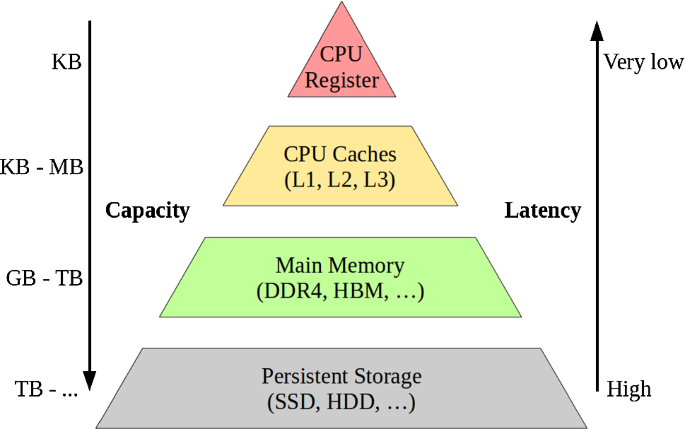
출처: https://link.springer.com/article/10.1007/s00778-019-00546-z
위로 갈 수록 속도는 빠르지만, 용량은 작다.
반대로, 아래로 갈수록 속도는 느리지만, 용량은 크다.
- CPU Register와 CPU Caches (L1, L2, L3)는 CPU 내부에 존재한다. 당연히 CPU가 아주 빠르게 접근할 수 있다.
- 메인 메모리는 CPU 외부에 존재한다. 레지스터와 캐시보다 더 느리게 접근할 수 밖에 없다.
- 메인 메모리를 읽어오기 위해선 인터럽트를 통해 커널모드에서 가져올 수 있다.
- 하드 디스크는 심지어 CPU가 직접 접근할 방법조차 없다.
- CPU가 하드 디스크에 접근하기 위해서는 하드 디스크의 데이터를 메모리로 이동시키고, 메모리에서 접근해야한다. 아주 느린 접근 밖에 불가능하다.
이렇게 보면 메인 메모리에 데이터를 저장하는 In-Memory DB와 하드 디스크에 데이터를 저장하는 Disk I/O DB의 성능 차이는 어쩌면 당연하다.
프로세스 관점
메모리 계층구조 관점에서 차이는 분명하다. 하지만 프로세스 관점에서 더 큰 차이가 발생한다.
Disk I/O
운영체제 입장에선 데이터 베이스도 그저 프로세스 일 뿐이기 때문이다.
운영체제는 CPU가 한정적이라 시분할 방식으로 동작하며, Disk I/O와 같이 외부 장치를 이용하는 시스템 콜을 사용할 땐 프로세스가 한동안 CPU를 양도하고 해당 프로세스를 Disk I/O 큐에 넣는다, 그리고 Disk I/O 작업이 끝날 때까지 Blocked 상태가 된다.

출처: 운영체제와 정보기술의 원리
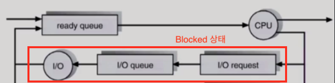
Disk I/O가 걸릴 때의 프로세스 상태 변화
출처: 운영체제와 정보기술의 원리
위와 같이 프로세스의 정보를 담은 PCB들을 요청에 따라 CPU Ready Queue 혹은 장치들의 큐에 넣어 요청을 처리한다.
그리고 이때 장치들의 큐에 들어간 프로세스의 상태는 Blocked 상태가 된다.
Blocked 상태의 프로세스는 해당 I/O 요청이 완료되고, 처리 결과(데이터)를 메모리로 옮기고 나서야 Ready 상태가 된다.
Memory
반면에 메인 메모리에 데이터를 저장하는 경우, 다른 장치들의 I/O가 걸리지않는다.
메인 메모리에 쓰기/읽기 작업을 위해 인터럽트를 통해 사용자모드를 커널모드로 바꿀 뿐, 프로세스의 상태는 Blocked이 되지않고, Ready와 Running 상태를 반복한다.
즉, Memory가 프로세스 관점에서도 Disk I/O보다 빠를 수 밖에 없다.
결과 가정
위와 같이 메모리 계층 구조와 프로세스 관점에서 보면 In-Memory가 성능이 더 좋을 수 밖에 없어보인다.
그래서 캐싱을 적용시키기 전에도 캐싱을 적용시키면 성능이 당연히 좋아질 수 밖에 없다고 생각했다.
실제로 좋아지는지 아래 성능 측정을 통해 알아본다.
성능 측정 및 분석
이제 캐싱을 적용시켜 성능 측정을 해보고 실제로도 성능 개선이 되는지 알아보고자 한다.
테스트에 사용될 데이터양은 아래와 같다.
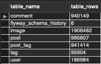
테스트 DB에 저장된 데이터 개수
주요 대상인 게시물은 대략 100만건이다. 각 테스트 시간은 10분으로 설정하였다.
캐싱 적용 전
캐싱 적용 전, 테스트에 사용될 인프라 구조는 아래와 같다.
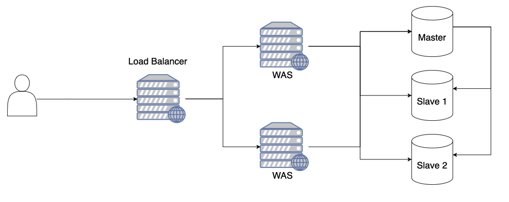
처음에 VUser는 최대치를 뽑아내기 위해 1,000부터 시작하여 다양한 VUser 설정값으로 테스트를 진행하였다.
그리고 VUser를 700 설정만으로도 위와 같이 에러율이 너무 높아 금방 테스트가 종료되는 것을 볼 수 있었다.
실제로 2-3분 사이에서 테스트가 종료되었다
원인을 찾기 위해 vmstat을 통한 서버 모니터링을 진행하였다.
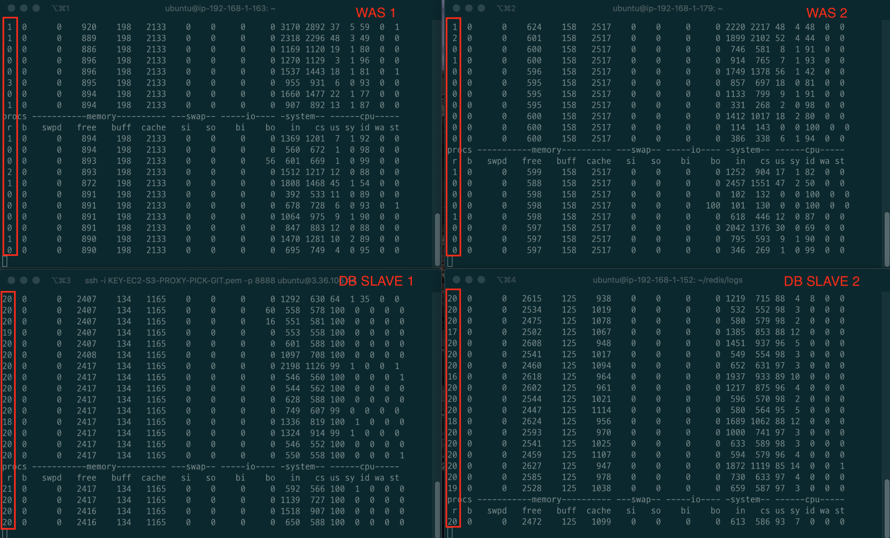
DB의 CPU는 굉장히 부하가 많이 걸리고, WAS의 CPU는 부하가 별로 안 걸리는 것을 볼 수 있다.
DB에서의 부하로 인지 하였고, WAS는 비교적 부하가 걸리지 않아 로그를 찾아보았다.
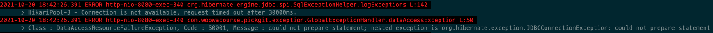
WAS에서 어떤 에러를 던지는 확인하였고, 위와 같이 Hikari Pool에서의 에러를 볼 수 있었다.
위 에러는 여유 커넥션이 존재하지 않아 요청 시간이 30초를 넘어버려 발생하는 에러이다. 참고
즉, 요청은 계속 들어오는 상황에서 DB는 요청당 처리 속도가 비교적 느리니 커넥션이 남아나질 않는 것이다.
물론 Hikari Pool의 설정을 통해 조금의 성능 개선이 있을 순 있지만, 비약적인 성능 개선 효과를 없을 것 이라 판단했다
결론적으론 600도 실패하였고, 500을 설정하여 테스트를 진행하게 되었다.
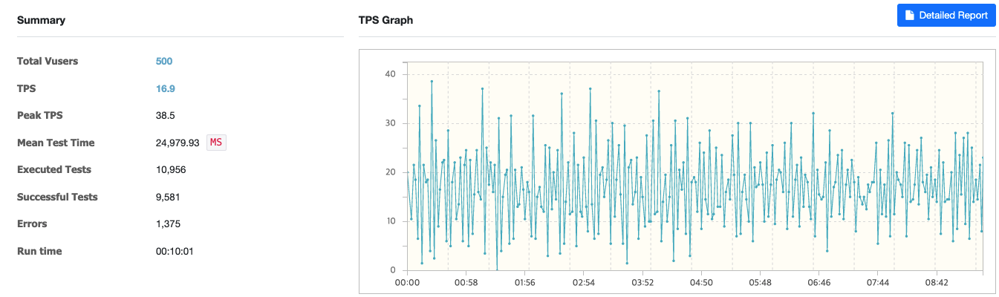
캐싱 적용 전 / VUser: 500, 1-1000 랜덤 페이지 조회
TPS가 비교적 낮게 나왔으며, MTT의 경우 24.9초가 걸리는 것을 볼 수 있다.
물론 이 부분은 쿼리 튜닝을 통해 충분히 성능을 개선 시킬 수도 있다.
실제로 코다와 케빈이 성능을 개선 시킬 수 있다는 것을 증명했다.
또한, 아래와 같이 DB를 Replication함에도 불구하고, DB의 부하가 굉장히 많이 걸리는 것을 볼 수 있다.
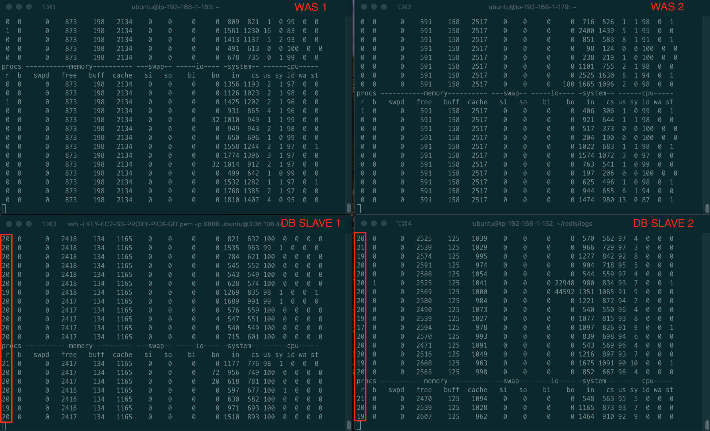
캐싱 적용 전 테스트 vmstat (중간에 한 장면을 스크린샷 찍은 것)
한 가지 의문은 Disk I/O의 병목이 생기지 않는다는 점이다. (bi와 wa를 보면 올라가지 않는다)
이 부분에 대해선 몇몇 크루들과 토론을 진행하였고, 운영체제와 DB에서의 캐싱으로 인해 Disk I/O의 부하가 비교적 적게 걸린다고 판단하였다.
그 이유는 medium은 메모리가 4기가나 되며, 테스트가 진행됨에 따라 메모리의 용량이 점차 작아지는 것을 발견했기 때문이다.
이외에도 호기심에 필자가 nano 환경에서 비슷한 테스트를 진행하였으며, 메모리가 적고 조회하는 데이터의 용량이 클 땐 Disk I/O의 병목이 발생하는 것을 발견할 수 있었다.
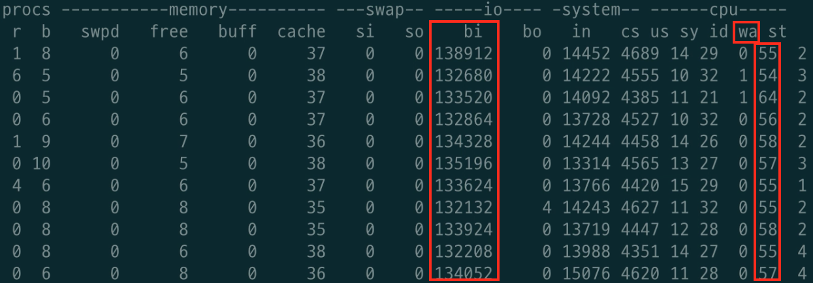
필자가 nano 환경에서 메모리 보다 더 높은 용량의 데이터를 조회 테스트했을 때의 모니터링 결과
Disk I/O 발생
즉, 단기간에 메모리보다 더 많은 데이터를 조회하는 테스트를 한다면 Disk I/O가 발생한다.
예를 들어, 1 ~ 1000의 랜덤 범위가 아닌, 1 ~ 999999정도의 랜덤 범위로 테스트를 하면 Disk I/O 부하가 발생할 수 있다.
캐싱 적용 후
캐싱 적용 후, 인프라 구조는 아래와 같다.
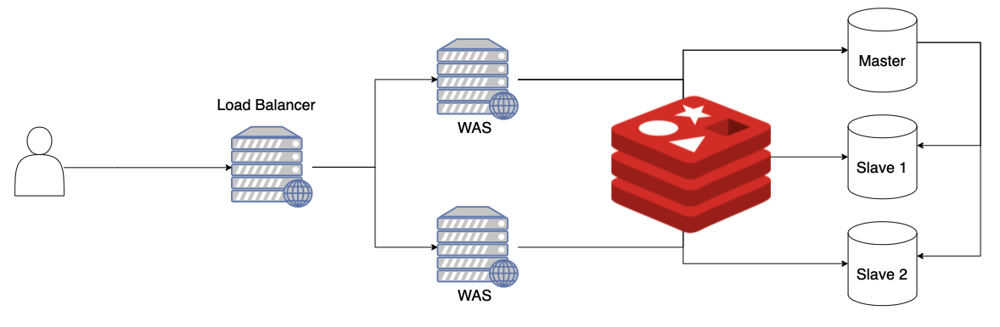
큰 차이점은 없다. 그저 중간에 Redis가 추가된 것 뿐이다.
WAS에서 먼저 Redis에 데이터가 있는지 확인 후, 없으면 DB에 조회하는 대표적인 Look Aside Cache 전략을 적용시켰다.
이번에도 동일하게 VUser를 1000부터 테스트를 진행하였지만, 이번엔 nGrinder의 메모리 부족으로 에러가 발생하였다.
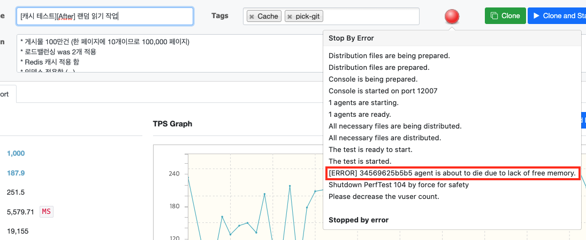
시작한지 2분정도 되었을 때, 에러가 발생하여 테스트가 종료되었다.
이는 현재 우아한 테크코스에서 제공하는 EC2의 보안 관계상 nGrinder의 컨트롤러와 에이전트를 모두 하나의 EC2안에 도커로 띄워서 메모리 부족으로 인한 문제로 판단된다.
즉, 현재 환경에선 VUser를 1000으로 설정하여 테스트를 진행하지 못한다.
캐시/버퍼 메모리를 비우고, 필요없는 메모리를 지워도 동일한 문제가 발생한다.
여러 VUser로 실험을 진행하였고, 700까진 그래도 간당간당히 가능했다.
결국 700으로 설정하여, 테스트를 진행하게 되었다.
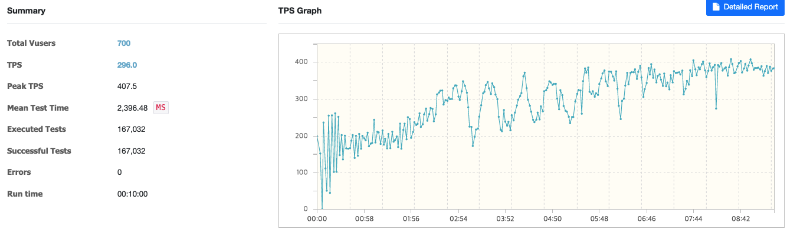
캐싱 적용 후 / VUser: 700, 1-1000 랜덤 페이지 조회
TPS는 296으로 나왔으며, MTT의 경우 2초가 걸리는 것을 볼 수 있다.
MTT가 비교적 높은 이유는 테스트 초기에 1000개의 데이터를 캐싱하는 과정에서 평균 값이 높아졌기 때문이다.
이는 캐싱을 배치 처리하거나, 쿼리를 튜닝하면 해결되는 문제라고 판단된다.
VUser 500으로 했을 땐 TPS가 340정도 나왔고, 600도 비슷하게 나왔다.
필자 생각엔 VUser를 1000으로 해도 문제없이 200후반에서 300대가 나올 것으로 예상된다.
그 이유는 실제 1000을 테스트 시 nGrinder가 터질 때 (2분 정도)까지 TPS가 187.9 찍히는 것을 확인했기 때문이다.
추후에 nGrinder의 메모리 문제를 해결시 따로 다시 테스트해 볼 예정이다.
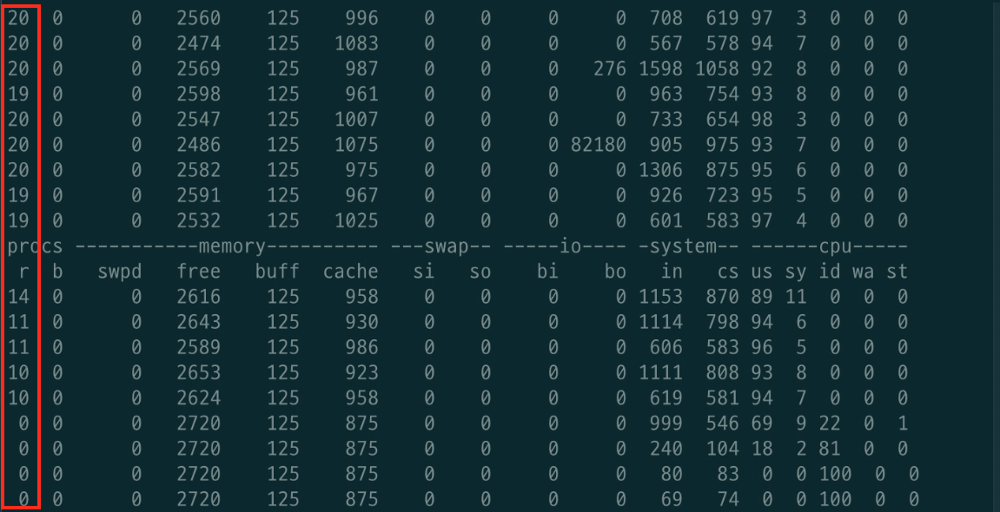
캐싱 적용 후 SLAVE 1 DB vmstat 모니터링
또한, 위와 같이 캐싱이 완료된 후로는 DB의 부하가 줄어드는 것을 볼 수 있었다.
결론
결론적으로 성능 개선 사항은 아래와 같다.
- TPS
- 16.9 (캐싱 전) -> 300 ~ 340 (캐싱 후)
- MTT
- 24.9초 (캐싱 전) -> 2초 (캐싱 후)
TPS의 경우 대략 18배, MTT는 대략 12배 정도 개선되었다.
물론 쿼리 튜닝을 하면 캐싱 전 성능과 전체적인 MTT의 향상이 예상된다.
쿼리 튜닝이 어느정도 완료되면, 그때 다시 테스트하여 글을 올릴 예정이다.
이외에도, Redis의 직렬화/역직렬화 최적화 혹은 Redis Replication을 통해 캐싱의 성능도 더 향상시킬 수 있을 듯 하다.
아쉬운 점
크게 아쉬운 점은 처음 가정했던 Disk I/O 부하가 발생하지 않았다는 점이다.
필자 판단으론 조회시 랜덤 페이지의 범위가 작아서 그런 듯하다.
이 부분은 추후에 쿼리 튜닝이 전부 완료되고, 더 높은 페이지의 범위까지 커버가 될 때 한번 더 테스트해봐야 할 듯 하다.